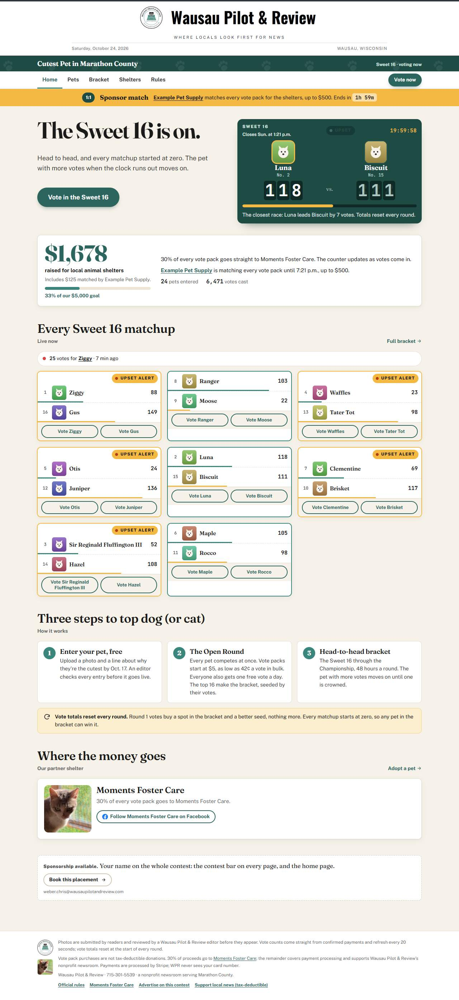
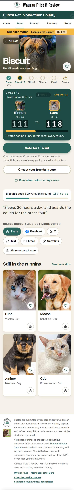
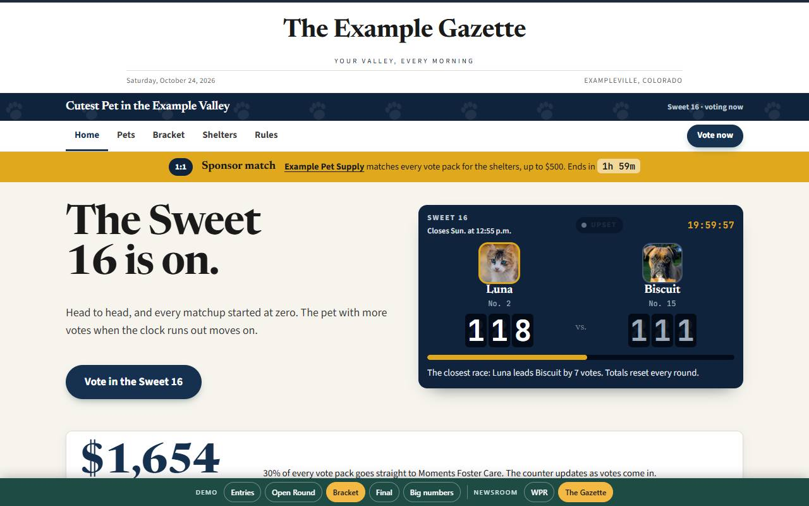
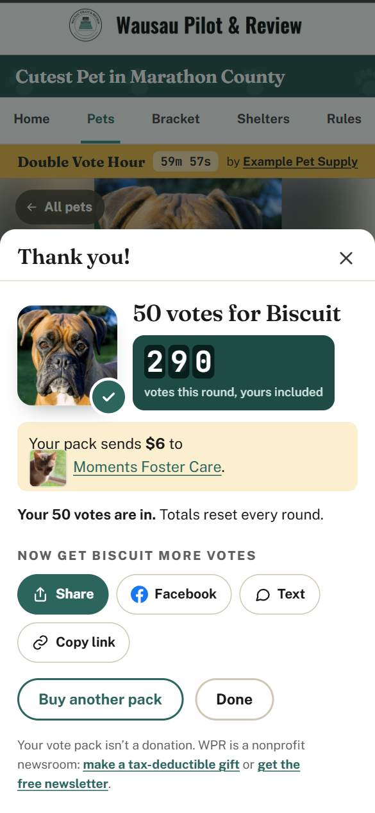

The cutest pet in your county, and the money it raises
A reader contest that runs for two and a half weeks, pays the local shelters, brings new readers and sponsors to a newsroom, and runs on a phone from a share link. Built by Wausau Pilot & Review. Ready for another town.
The demo runs on placeholder pets and a pretend checkout. The bar at its foot switches the phase, and the newsroom: the same engine in another paper's colors and name.
Tap through it. It is the real site.
How it works
What a newsroom gets
Everything below exists and runs today. Nothing here is a mock-up.
The public site
Phone-first. Every pet has a page that opens from a share link with the photo, the live count, the deadline and the Vote button in the first screen. A gallery, a bracket, results, rules, a shelters page. Embeds in a WordPress page, plus a compact widget for stories and a block for the newsletter.
The money, done honestly
Stripe checkout with Apple Pay and Google Pay. Votes are credited only when Stripe confirms the payment. Late payments and payments for a removed pet are refunded, never credited. A resolved round's totals never move. The payout statement computes each shelter's share to the cent.
The staff desk
Moderation with reasons and an audit trail, rounds opened and closed by a person, a health tab that tells staff before readers do, the email sweep, a Social desk that makes share graphics with captions, the newsletter block, the payout statement, the archive.
The emails
Sixteen of them: entry received, approved, not approved, six tips to owners across the contest, advancement, elimination, the champion, notes to buyers who asked when their pet plays again, and the free vote's code and reminder. Every one carries a stop link.
Sharing that sells votes
Each pet's share link previews its photo on Facebook; during the bracket, both pets and the deadline. Owners make story, square and flyer images with a QR code from their pet's page. Buyers get share buttons on the thank-you screen.
Sponsors and drama
Presenting, gallery and bracket placements with a sponsor kit. Sponsored Double Vote Hours and match hours. An upset lamp that lights when the worse seed leads. A staged champion reveal. An owner's vote goal on the page.
The campaign kit
A day-by-day calendar tied to each phase, an owner toolkit, email sequences, a caption bank with short video scripts, and a moderation playbook.
Guardrails
Published rules, data erased a year after the contest, photos stripped of location data, the public never sees an owner, a free daily vote that stays off until counsel says yes. An accessibility audit at phone size on every page.
What it looks like
Placeholder pets, the real design. Each pet's page takes the color of its own photo.




In your name
The newsroom is a setting, not a rebuild. One entry names you, your region, your towns, your clock, your lockup; one theme block sets your colors and faces. Everything else follows, down to the share images and the card form.
Wausau Pilot & Review
Typewriter teal Sun Cream
Fraunces over Public Sans. Marathon County, Wisconsin. Central time.
The Example Gazette
Navy Gold Paper
Newsreader over Source Sans. The Example Valley, Colorado. Mountain time. (A fictional paper, for the demo.)
What it needs
Each newsroom runs its own copy, with its own accounts, so the money and the data are only ever yours.
| Account | For | Cost |
|---|---|---|
| Stripe | Checkout, receipts, refunds. A separate account for the contest, so vote packs never mix with donations. | 2.9% + 30¢ per card payment |
| Supabase | The database, photo storage, the edge functions. The free plan works; the Pro plan adds image resizing and never pauses. | $0 or $25/mo |
| Resend | The emails. The free tier is 100 a day; a 300-entry contest needs the next plan for its month. | $20 for the month |
| GitHub | Hosts the site (GitHub Pages) and runs the deploys, tests and the email sweep. | $0 |
| Your website | One page that embeds the contest, and the widget in stories. | $0 |
Staff time: a moderator during entries week, then about an hour a day while voting is open. Rounds are closed by a person, on purpose. Two and a half weeks, start to champion; the calendar says do not stretch it.
The recommended pack ladder
- 5 votes · $5
- 25 · $20
- 75 · $50
- 200 · $100
- 600 · $250
Per-vote price falls from $1 to about 42¢, which is what makes the big packs worth it to the buyers who decide close matchups. Yours to change.
Built to be checked
Tested
Twelve database test suites, 321 assertions. Forty-three tests on the email templates and the functions. Two hundred and twenty-six on the front end. A browser walk of the whole contest, entry to payout, on every push.
Accessible
WCAG 2.2 AA, checked by an automated audit of every page in every phase at phone size: 42 of 42, on every push.
Dark mode
Follows the reader’s phone. The embed and the article widget stay light inside your page; the share images stay the brand’s look.
Fast
Lighthouse on the live demo, Oct. 24, 2026: accessibility, best practices and SEO 100; performance 98 on desktop and 84 on a simulated phone over slow 4G, the median of three runs.
First run: November 2026
Wausau Pilot & Review runs it first, Nov. 14 to Dec. 5, 2026, for Moments Foster Care. The numbers from that run, and what we learned, go here. Until then, nothing on this page claims a result.